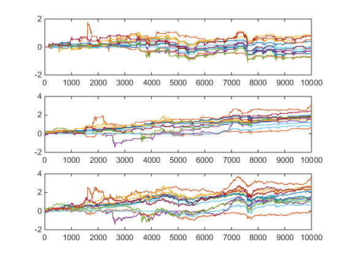

Contents
This program explore the calendar anormaly using benchmark data downloaded from bloomberg,
We use the following seven data sets: 'Index','country','fx','gsci','gsfactors','ussectors'
clear; load benchmarks; load job_benchmark; %%%%%%%%%%%%%%%%%%%%%%%%%%%%%%%%%%%%%%%%%%%%%%% %%%%%%%%% transform into fts objects %%%%%%%%%% %%%%%%%%%%%%%%%%%%%%%%%%%%%%%%%%%%%%%%%%%%%%%%% list = {'Index','country','fx','gsci','gsfactors','ussectors'}; k=1; px = cell(length(list),1); period = 10000; garch_calib_period = min(2000,period); while k <= length(list) n=1; px_x = cell(size(eval(list{k}),1),1); while n<= size(eval(list{k}),1) px_x(n) = {fints(storage{k}{n}(end-period:end,1),storage{k}{n}(end-period:end,2),regexprep(eval(sprintf('%s(n,1)',list{k})),'[^a-zA-Z_]',''),'d','LAST_PRICE')}; n=n+1; end px(k) = {merge(px_x{1:end},'SortColumns',0)}; k = k +1; end %%%%%%%%%%%%%%%%%%%%%%%%%%%%%%%%%%%%%%%%%%%%%%% %%%%%%%%%%%%%%% plot the result %%%%%%%%%%%%%% %%%%%%%%%%%%%%%%%%%%%%%%%%%%%%%%%%%%%%%%%%%%%%% % k is list category: Index, fx etc... % 1 'Index' % 2 'country' % 3 'fx' % 4 'gsci' % 5 'gsfactors' % 6 'ussectors' % SELECT k value before proceed. k=1; rt = tick2ret(px{k},'Method','Continuous'); rt = fillts(rt,0); rt_mx = fts2mat(rt,1); perf = rt_mx; perf(:,2:end) = cumsum(rt_mx(:,2:end)); % date filter % 0) april - oct effect rt_month_effect_summer = rt_mx; condition_summer = month(rt_month_effect_summer(:,1))>=11 | month(rt_month_effect_summer(:,1))<=4; rt_month_effect_summer(condition_summer,2:end)=0; rt_month_effect_winter = rt_mx; condition_winter = month(rt_month_effect_winter(:,1))<11 & month(rt_month_effect_winter(:,1))>4; rt_month_effect_winter(condition_winter,2:end)=0; perf_month_effect_summer = rt_month_effect_summer; perf_month_effect_summer(:,2:end) = cumsum(rt_month_effect_summer(:,2:end)); perf_month_effect_winter = rt_month_effect_winter; perf_month_effect_winter(:,2:end) = cumsum(rt_month_effect_winter(:,2:end));
plot summer winter all in one
figure;
subplot(3,1,1)
plot(perf_month_effect_summer(:,2:end));
subplot(3,1,2)
plot(perf_month_effect_winter(:,2:end));
subplot(3,1,3)
plot(perf(:,2:end));
 plot single index one by one
figure;
i = 1;
while i<= size(eval(list{k}),1)
subplot(5,3,i)
plot(perf_month_effect_summer(:,i+1))
hold on
plot(perf_month_effect_winter(:,i+1))
plot(perf(:,i+1))
hold off
title(Index(i))
i = i+1;
end
% 1) first three and last three working date of month
rt_start_of_month = rt_mx;
condition_busday = isbusday(rt_mx(:,1));
condition_start_of_month = wrkdydif(fbusdate(year(rt_mx(:,1)),month(rt_mx(:,1))),rt_mx(:,1))>3;
rt_start_of_month(condition_busday & condition_start_of_month ,2:end) = 0;
rt_end_of_month = rt_mx;
condition_end_of_month = wrkdydif(rt_mx(:,1),fbusdate(year(datetime(year(rt_mx(:,1)),month(rt_mx(:,1)),day(rt_mx(:,1)))+calmonths(1)),month(datetime(year(rt_mx(:,1)),month(rt_mx(:,1)),day(rt_mx(:,1)))+calmonths(1))))>4;
rt_end_of_month(condition_busday & condition_end_of_month ,2:end) = 0;
rt_turn_of_month = rt_mx;
rt_turn_of_month(condition_busday & (condition_end_of_month & condition_start_of_month),2:end)= 0;
perf_start_of_month =rt_mx;
perf_start_of_month(:,2:end) = cumsum(rt_start_of_month(:,2:end));
perf_end_of_month =rt_mx;
perf_end_of_month(:,2:end) = cumsum(rt_end_of_month(:,2:end));
perf_turn_of_month = rt_mx;
perf_turn_of_month(:,2:end) = cumsum(rt_turn_of_month(:,2:end));
% plot turn of month performance all in one
figure;
subplot(4,1,1)
plot(perf_start_of_month(:,2:end));
subplot(4,1,2)
plot(perf_end_of_month(:,2:end));
subplot(4,1,3)
plot(perf_turn_of_month(:,2:end));
subplot(4,1,4)
plot(perf(:,2:end));
% plot turn of the month performance one by one
figure;
x = 1;
while x<= size(eval(list{1}),1)
subplot(5,3,x)
plot(perf_start_of_month(:,x+1))
hold on
plot(perf_end_of_month(:,x+1))
plot(perf_turn_of_month(:,x+1))
plot(perf(:,x+1))
hold off
title(Index(x))
x = x+1;
end
% combine month effect and turnofmonth effect
rt_combined = rt_mx;
rt_combined(condition_winter | condition_busday & condition_end_of_month & condition_start_of_month,2:end)=0;
rt_equal_weight = mean(rt_combined(:,2:end)')';
perf_combined =rt_mx;
perf_combined(:,2:end) = cumsum(rt_combined(:,2:end));
perf_equal_weight = rt_mx(:,1:2);
perf_equal_weight(:,2) = cumsum(rt_equal_weight);
% plot combined result all in one.
figure
subplot(2,1,1);
t = datetime(perf_combined(:,1),'ConvertFrom','datenum');
plot(t,perf_combined(:,2:end));
subplot(2,1,2);
t = datetime(perf_combined(:,1),'ConvertFrom','datenum');
plot(t,perf_equal_weight(:,2));
% plot all result, one by one.
x = 1;
while x<= size(eval(list{k}),1)
subplot(5,3,x)
plot(perf_month_effect_winter(:,x+1))
hold on
plot(perf_month_effect_summer(:,x+1))
plot(perf_turn_of_month(:,x+1))
plot(perf_combined(:,x+1))
plot(perf(:,x+1))
hold off
title(Index(x))
x = x+1;
end
% plot equal weighted portfolio one by one
rt_winter_eq = mean(rt_month_effect_winter(:,2:end)')';
perf_winter_eq = rt_mx(:,1:2);
perf_winter_eq(:,2) = cumsum(rt_winter_eq);
rt_summer_eq = mean(rt_month_effect_summer(:,2:end)')';
perf_summer_eq = rt_mx(:,1:2);
perf_summer_eq(:,2) = cumsum(rt_summer_eq);
rt_tom_eq = mean(rt_turn_of_month(:,2:end)')';
perf_tom_eq = rt_mx(:,1:2);
perf_tom_eq(:,2) = cumsum(rt_tom_eq);
rt_comb_eq = mean(rt_combined(:,2:end)')';
perf_comb_eq = rt_mx(:,1:2);
perf_comb_eq(:,2) = cumsum(rt_comb_eq);
rt_eq = mean(rt_mx(:,2:end)')';
perf_eq = rt_mx(:,1:2);
perf_eq(:,2) = cumsum(rt_eq);
figure;
plot(perf_eq(:,2));
hold on;
plot(perf_winter_eq(:,2));
plot(perf_summer_eq(:,2));
plot(perf_tom_eq(:,2));
plot(perf_comb_eq(:,2));
hold off;
% calculate sharpe ratio
riskless = 0;
sharpe_winter = sqrt(356)*sharpe((rt_month_effect_winter(:,2:end)),riskless);
sharpe_summer = sqrt(356)*sharpe((rt_month_effect_summer(:,2:end)),riskless);
sharpe_turn_of_month = sqrt(356)*sharpe((rt_turn_of_month(:,2:end)),riskless);
sharpe_combined = sqrt(356)*sharpe((rt_combined(:,2:end)),riskless);
sharpe_all = sqrt(356)*sharpe((rt_mx(:,2:end)),riskless);
sharpe_eq = sqrt(356)*sharpe(rt_eq,riskless);
sharpe_winter_eq = sqrt(356)*sharpe(rt_winter_eq,riskless);
sharpe_summer_eq = sqrt(356)*sharpe(rt_summer_eq,riskless);
sharpe_tom_eq = sqrt(356)*sharpe(rt_tom_eq,riskless);
sharpe_comb_eq = sqrt(356)*sharpe(rt_comb_eq,riskless);
figure
plot(sharpe_all);
hold on
plot(sharpe_winter);
plot(sharpe_summer);
plot(sharpe_turn_of_month);
plot(sharpe_combined)
hold off
figure
plot(sharpe_winter - sharpe_all);
hold on
plot(sharpe_summer - sharpe_all);
plot(sharpe_turn_of_month - sharpe_all);
plot(sharpe_combined - sharpe_all);
hold off
% for demonstration in booklet
rt_combined = rt_mx;
rt_combined(condition_winter | condition_busday & condition_end_of_month & condition_start_of_month,2:end)=0;
rt_equal_weight = mean(rt_combined(:,2:end)')';
rt_equal_world = mean(rt_mx(:,2:end)')';
rt_equal_weight_lev = 2.6806*rt_equal_weight;
perf_equal_weight = rt_mx(:,1:2);
perf_equal_weight(:,2) = cumsum(rt_equal_weight);
perf_cal_1 = 1000*exp(cumsum(rt_equal_weight));
perf_equal_world = rt_mx(:,1:2);
perf_equal_world(:,2) = cumsum(rt_equal_world);
perf_index = 1000*exp(cumsum(rt_equal_world));
perf_equal_weight_lv = rt_mx(:,1:2);
perf_equal_weight_lv(:,2) = cumsum(rt_equal_weight_lev);
perf_cal_2 = 1000*exp(cumsum(rt_equal_weight_lev));
365*mean(rt_equal_world)
365*mean(rt_equal_weight)
365*mean(rt_equal_weight_lev)
sqrt(365)*std(rt_equal_world)
sqrt(365)*std(rt_equal_weight)
sqrt(365)*std(rt_equal_weight_lev)
maxdrawdown(perf_index)
maxdrawdown(perf_cal_1)
maxdrawdown(perf_cal_2)
% convert to monthly
dtd = rt_mx(:,1);
perf_index_ts = fints(dtd, perf_index);
perf_index_ts = tomonthly(perf_index_ts);
perf_index = fts2mat(perf_index_ts);
dt = perf_index_ts.dates;
perf_cal_1_ts = fints(dtd, perf_cal_1);
perf_cal_1_ts = tomonthly(perf_cal_1_ts);
perf_cal_1 = fts2mat(perf_cal_1_ts);
perf_cal_2_ts = fints(dtd, perf_cal_2);
perf_cal_2_ts = tomonthly(perf_cal_2_ts);
perf_cal_2 = fts2mat(perf_cal_2_ts);
semilogy(dt,perf_index);
hold on
semilogy(dt,perf_cal_1);
semilogy(dt,perf_cal_2);
datetick('x','yyyy');
xlim auto;
ylim([500 100000]);
set(gca,'YTick',[500 1000 2500 5000 10000 25000 50000 100000],'YTickLabel',{'500','1,000','2,500', '5,000', '10,000','25,000','50,000','100,000'});
text(dt(end), perf_index(end),[' Index'],'HorizontalAlignment','Left');
text(dt(end), perf_cal_1(end),[' Calendar'],'HorizontalAlignment','Left');
text(dt(end), perf_cal_2(end),[' Leveraged'],'HorizontalAlignment','Left');
ylabel('Portfolio Value', 'FontSize', 18);
xlabel('Year', 'FontSize', 18);
set(gca,'units','centimeters')
pos = get(gca,'Position');
ti = get(gca,'TightInset');
set(gcf, 'PaperUnits','centimeters');
set(gcf, 'PaperSize', [pos(3)+ti(1)*2+ti(3) pos(4)+ti(2)*2+ti(4)]);
set(gcf, 'PaperPositionMode', 'manual');
set(gcf, 'PaperPosition',[0 0 pos(3)+ti(1)*2+ti(3) pos(4)+ti(2)*2+ti(4)]);
% cumulated variance
% k indicates list category.
% 1 'Index'
% 2 'country'
% 3 'fx'
% 4 'gsci'
% 5 'gsfactors'
% 6 'ussectors'
k = 1;
rt = tick2ret(px{k},'Method','Continuous');
rt = fillts(rt,0);
rt_mx = fts2mat(rt,1);
perf = rt_mx;
perf(:,2:end) = cumsum(rt_mx(:,2:end));
cumvar = cumsum((100*rt_mx(:,2:end)).^2);
dt = rt_mx(:,1);
figure
plot(dt,cumvar)
datetick('x','yyyy');
lgd = eval(list{k});
lgd
clickableLegend(lgd(:,1));
ylabel('Accumulated Variance', 'FontSize', 18);
% probe for seasonality
k = 1;
% by month
riskless = 0;
rt = tick2ret(px{k},'Method','Continuous');
rt = fillts(rt,0);
rt_mx = fts2mat(rt,1);
m = 1;
while m<=12
rt_month_effect = rt_mx;
condition_month = not(eq(month(rt_month_effect(:,1)),m));
rt_month_effect(condition_month,2:end)=0;
perf_month_effect = rt_month_effect;
perf_month_effect(:,2:end) = cumsum(rt_month_effect(:,2:end));
sharpe_month(m,:) = sqrt(356)*sharpe((rt_month_effect(:,2:end)),riskless);
subplot(4,3,m)
plot(perf_month_effect(:,2:end));
title(sprintf('%i',m));
m = m+1;
end
plot(sharpe_month);
% by business day
% first few days
d = 1;
while d<=29
condition_busday = isbusday(rt_mx(:,1));
condition_d = not(eq(wrkdydif(fbusdate(year(rt_mx(:,1)),month(rt_mx(:,1))),rt_mx(:,1)),d));
rt_d = rt_mx;
rt_d(condition_busday & condition_d ,2:end) = 0;
perf_d = rt_d;
perf_d = cumsum(rt_d(:,2:end));
rt_d_eq = mean(rt_d(:,2:end)')';
perf_d_eq = rt_d(:,1:2);
perf_d_eq(:,2) = cumsum(rt_d_eq);
subplot(5,6,d)
plot(perf_d);
ylim([-1,1.5])
% subplot(2,1,2)
% plot(perf_d_eq(:,2));
sharpe_d(d) = sqrt(356)*sharpe(rt_d_eq,riskless);
d = d+1;
end
figure
plot(sharpe_d);
% first few days, by index
i = 1;
while i<=14
d = 1;
while d<=29
condition_busday = isbusday(rt_mx(:,1));
condition_d = not(eq(wrkdydif(fbusdate(year(rt_mx(:,1)),month(rt_mx(:,1))),rt_mx(:,1)),d));
% alternative condition_d, counting for the last few days.
% condition_d = not(eq(wrkdydif(rt_mx(:,1),fbusdate(year(datetime(year(rt_mx(:,1)),month(rt_mx(:,1)),day(rt_mx(:,1)))+calmonths(1)),month(datetime(year(rt_mx(:,1)),month(rt_mx(:,1)),day(rt_mx(:,1)))+calmonths(1)))),d));
rt_d = rt_mx;
rt_d(condition_busday & condition_d ,2+i-1) = 0;
sharpe_d(i,d) = sqrt(356)*sharpe(rt_d(:,2+i-1),riskless);
d = d+1;
end
i = i+1;
end
figure
plot(sharpe_d');
% last few days
d = 1;
while d <= 29
rt_d = rt_mx;
condition_busday = isbusday(rt_mx(:,1));
condition_d = not(eq(wrkdydif(rt_mx(:,1),fbusdate(year(datetime(year(rt_mx(:,1)),month(rt_mx(:,1)),day(rt_mx(:,1)))+calmonths(1)),month(datetime(year(rt_mx(:,1)),month(rt_mx(:,1)),day(rt_mx(:,1)))+calmonths(1)))),d));
rt_d(condition_busday & condition_d ,2:end) = 0;
perf_d = rt_d;
perf_d = cumsum(rt_d(:,2:end));
rt_d_eq = mean(rt_d(:,2:end)')';
perf_d_eq = rt_d(:,1:2);
perf_d_eq(:,2) = cumsum(rt_d_eq);
subplot(6,5,d)
plot(perf_d);
ylim([-1,1.5])
sharpe_d(d) = sqrt(356)*sharpe(rt_d_eq,riskless);
d = d+1;
end
ans =
0.0641
ans =
0.0511
ans =
0.1369
ans =
0.1382
ans =
0.0516
ans =
0.1384
ans =
0.6190
ans =
0.1302
ans =
0.3119
lgd =
'SPX Index'
'SHCOMP Index'
'CCMP Index'
'MEXBOL Index'
'SX5E Index'
'UKX Index'
'DAX Index'
'CAC Index'
'NKY Index'
'HSI Index'
'SHSZ300 Index'
'KOSPI Index'
'FSSTI Index'
'SENSEX Index'